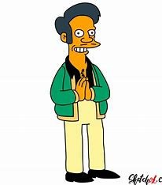

Apu Nahasapeemapetilon
Apu Nahasapeemapetilon on toistuva hahmo amerikkalaisessa animaatiosarjassa The Simpsons. Hän on intialainen maahanmuuttajaomistaja, joka pyörittää Kwik-E-Martia, suosittua lähikauppaa Springfieldissä, ja hänet tunnetaan iskulauseestaan "Kiitos, tule uudelleen". Apu aloitti työskentelyn Kwik-E-Martissa tutkijakoulun aikana maksaakseen opintolainansa pois; Hän jäi sen jälkeen, koska hän nautti työstään ja saamistaan ystävistä. Hän pysyi laittomana maahanmuuttajana, kunnes pormestari Quimby ehdotti kunnallista lakia kaikkien paperittomien ulkomaalaisten karkottamiseksi.